Tema 4. Cómputo: EC2, Lambda y contenedores¶
En AWS puedes ejecutar el código de una aplicación de tres maneras: en una máquina virtual (EC2, Elastic Compute Cloud, nube elástica de cómputo), en un contenedor (ECS o Fargate) o como una función (Lambda). Las tres sirven para desplegar la API de un proyecto de DAW, pero se diferencian en quién instala y actualiza el sistema operativo, en cómo se paga y en si el programa puede quedarse encendido todo el día esperando peticiones en un puerto, como hace un servidor web. Una máquina virtual o un contenedor pueden hacerlo; una función Lambda no, porque arranca cuando llega una petición, la atiende y se apaga.
Por eso el error típico en un proyecto no es confundir el nombre de los servicios, sino escoger el que no encaja. Un ejemplo es llevar a Lambda, solo porque es serverless, un servidor de chat que tiene que mantener abiertas las conexiones de los usuarios, cuando una función se apaga al terminar cada petición y no puede sostenerlas. El error contrario es pagar una máquina t3.large encendida las veinticuatro horas para una tarea programada que dura treinta segundos, cuando una función la haría cobrando solo esos segundos. Este tema corresponde al Módulo 6 de AWS Academy Cloud Foundations, y los términos clave están en el glosario.
Al empezar
Empieza por el cuestionario inicial. En el Tema 3 diseñaste la red en la que vive la instancia; en este tema decides dónde se ejecuta el programa y cuánto cuesta mantenerlo encendido.
Propuesta didáctica¶
RA3. Diseña y configura redes virtuales y servicios de cómputo en la nube, aplicando buenas prácticas de seguridad, estrategias de balanceo de carga, escalado automático y aprovechando tecnologías serverless, contenedores y máquinas virtuales según casos de uso específicos.
Criterios de evaluación (RA3)¶
- d) Se ha realizado la selección de servicios de computación adecuados según casos de uso.
- f) Se han desarrollado prácticas relacionadas con la optimización de recursos computacionales.
El balanceo de carga y el Auto Scaling se desarrollan en el Tema 8. Aquí solo aparece el ASG (Auto Scaling group, grupo de autoescalado) porque trabaja junto a EC2: añade o quita instancias según la carga, pero no decide por ti si tu aplicación debería ir en una máquina virtual o en Lambda.
Contenidos¶
- EC2: AMI, familia de instancia, red, compra (On-Demand, Spot, Savings Plans).
- Lambda: evento, duración, coste por invocación.
- ECS, EKS, Fargate: contenedores con o sin nodos cuyo sistema operativo (SO) tú parcheas.
- Elastic Beanstalk, Lightsail: nombres; cuándo simplifican.
Programación de aula (orientativa)¶
| Quincena | En tutoría | Trabajo autónomo / evidencias |
|---|---|---|
| Q5 | EC2 + AMI + elección VM/Lambda | PR401; Autocheck del tema |
Cuestionario inicial¶
Responde con lo que sepas
- Nombra un caso en el que EC2 encaje mejor que Lambda (pista: estado o conexión larga).
- ¿Qué es una AMI y para qué la usarías al clonar un lab?
- ¿Spot es un tamaño de instancia (
t3.micro) o un modelo de compra? - ¿Por qué conviene terminate (o min=0) al acabar el lab aunque «la dejes para mañana»?
- En una frase: ¿qué diferencia hay entre una VM y un contenedor en quién mantiene el SO?
Este cuestionario es solo para ti: te ayuda a ver qué dominas ya y qué te falta antes o mientras lees el tema. No se entrega en Aules; respóndelo con lo que sepas y, cuando quieras contrastar, abre el bloque Soluciones (autoevaluación) debajo o el índice en Soluciones.
Soluciones (autoevaluación)
-
Una API que mantiene conexiones abiertas con los usuarios (por ejemplo, un chat con WebSocket) o un proceso largo que guarda datos en memoria y escucha siempre en un puerto encaja mejor en EC2 (o en un contenedor), porque una función Lambda se apaga al terminar cada petición.
-
Una AMI es la plantilla (SO + software) para lanzar instancias iguales; sirve para clonar el lab sin reinstalar a mano.
-
Spot es un modelo de compra (capacidad interrumpible más barata), no un tamaño
t3.micro. -
Si no terminate (o min=0), el lab sigue facturando horas, discos y balanceadores olvidados.
-
En una VM gestionas (más) el SO y el proceso; en un contenedor empaquetas la app y, con Fargate, dejas de parchear nodos EC2 del clúster.
Bloque Foundations (Módulo 6)¶
Piensa en la API de tu proyecto, hecha en Node o PHP, con el front aparte y la base de datos en RDS (Relational Database Service, servicio de bases de datos relacionales). Esa misma API se puede instalar en una instancia EC2, adaptarse para que se ejecute como función Lambda o empaquetarse con Docker y ejecutarse en ECS con Fargate. En los tres casos el código se ejecuta, pero cambia quién mantiene y actualiza cada parte, cómo se paga, cuánto puede durar cada ejecución y si el programa puede quedarse encendido escuchando en un puerto y guardando datos en memoria entre una petición y otra.
Amazon EC2¶
Amazon EC2 es el servicio de instancias (máquinas virtuales) en AWS. Eliges una plantilla (AMI, Amazon Machine Image, imagen de máquina de Amazon), un tipo de instancia (combinación de vCPU —virtual CPU, procesador virtual—, RAM y red), la VPC (Virtual Private Cloud, nube virtual privada) y la subred, el disco (EBS, Elastic Block Store, almacenamiento en bloques elástico, Tema 5) y el security group. La instancia es un servidor Linux o Windows donde instalas Node, PHP, nginx o Apache y dejas un proceso escuchando un puerto.
Es la opción más directa para una API clásica: un programa que hace listen(3000) y se queda esperando peticiones en ese puerto, que guarda las sesiones de los usuarios en memoria o que mantiene conexiones abiertas con ellos, como un chat. A cambio, tú aplicas los parches del sistema operativo, tú mantienes y actualizas Node o PHP y sus dependencias, y pagas todo el tiempo que la instancia está en estado running, más el disco EBS asociado. En el lab del Módulo 6 sueles lanzar una instancia pequeña a partir de una AMI. En el Learner Lab, si la EC2 tiene que acceder a S3 u otros servicios, le asignas el rol LabRole mediante LabInstanceProfile; ese rol da permisos a la instancia, no a tu sesión en la consola.
La AMI no es la instancia encendida, sino la receta con la que se crea: el sistema operativo y el software que trae instalado. Si en cada despliegue instalas Node a mano, pierdes tiempo y además pagas las horas que la máquina pasa encendida mientras tanto. Por eso, cuando una instancia ya está bien configurada, conviene crear a partir de ella una AMI propia y lanzar copias idénticas.
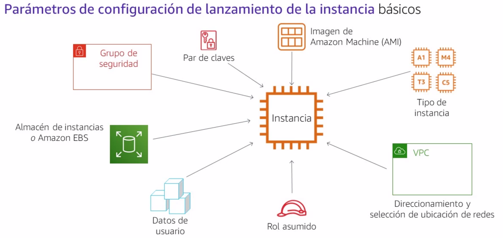
Crear tu propia AMI
Cuando la instancia ya tiene el SO y el software listos, puedes crear la imagen desde Actions → Image and templates → Create image. Así lanzas clones iguales sin reinstalar a mano. En el formulario conviene dejar activado el reinicio (reboot), porque así el snapshot del disco se toma en un estado coherente.
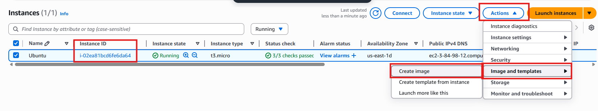
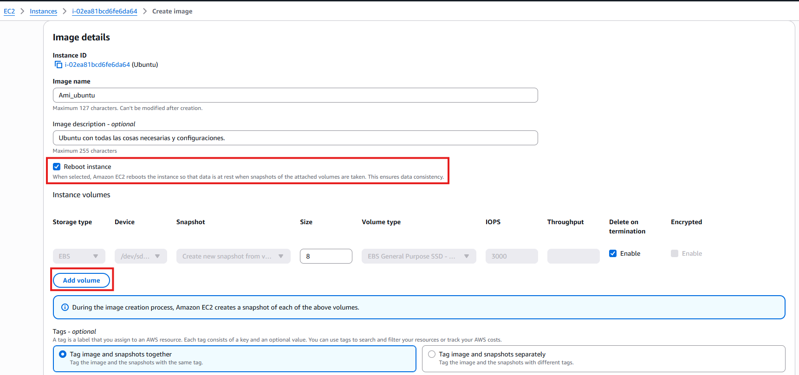
Características EC2 (Foundations)
- Genera máquinas virtuales en la nube (web, correo, ficheros…).
- El coste depende de RAM, vCPU, disco e IP elástica si la usas.
- Es escalable: puedes cambiar el tipo de instancia (con límites) según lo que necesites y apagarla cuando no hace falta.
Tipo de instancia y familia¶
Un tipo de instancia, como t3.micro, fija cuántas vCPU, cuánta memoria y qué rendimiento de red tiene la máquina. Los tipos se agrupan en familias según el uso para el que están pensados: propósito general (t, m), cómputo intensivo (c), mucha memoria (r, x), mucho almacenamiento (i, d) o aceleradores como GPU (p, g). Ajustar el tamaño a la carga real se llama rightsizing: para una API de prácticas con poco tráfico no hace falta un 2xlarge porque lo usara un tutorial, y un tipo pequeño suele bastar.
Otra cosa distinta es el modelo de compra (On-Demand, Reserved, Savings Plans o Spot), que no es una familia. El tipo indica qué hardware tiene la máquina; el modelo indica cómo la pagas y si AWS puede retirártela. Por ejemplo, puedes comprar un t3.micro como Spot: es la misma máquina pequeña, pero más barata y con la condición de que AWS puede interrumpirla.
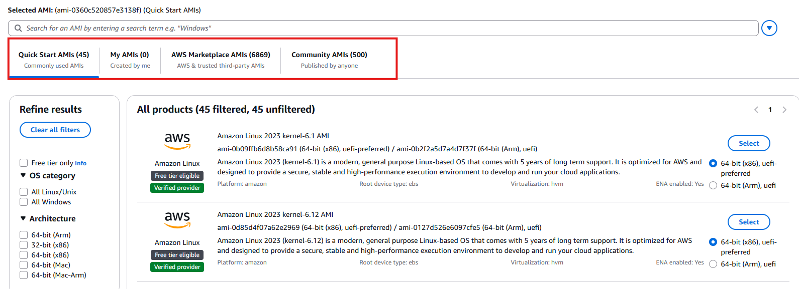
Disco: EBS frente a instance store¶
EBS es un disco en red que no depende del servidor físico: si detienes la instancia (stop), el volumen raíz conserva sus datos y vuelve a estar disponible cuando la inicias. Lo que se configura es qué ocurre al terminar la instancia (terminate): el atributo DeleteOnTermination decide si el volumen se borra con ella, que es lo que viene activado por defecto en el volumen raíz, o si se conserva. El instance store, en cambio, es un disco local del servidor físico donde corre la instancia. Es más rápido en algunos casos, pero sus datos se pierden cuando la instancia se detiene, hiberna o termina, y también si falla ese hardware. Para la API del proyecto y sus registros casi siempre eliges EBS; el instance store solo tiene sentido en cargas muy concretas y como pregunta de examen.
Par de claves y user data¶
El par de claves (key pair) es la credencial con la que entras por SSH (Secure Shell, acceso remoto cifrado) a una instancia Linux, si no te conectas desde la consola con Instance Connect. Si generas tu propia clave, descarga el fichero .pem en ese momento, porque AWS no te lo vuelve a dar. En Academy sueles usar la clave que trae el lab, vockey o labsuser.pem según el caso.
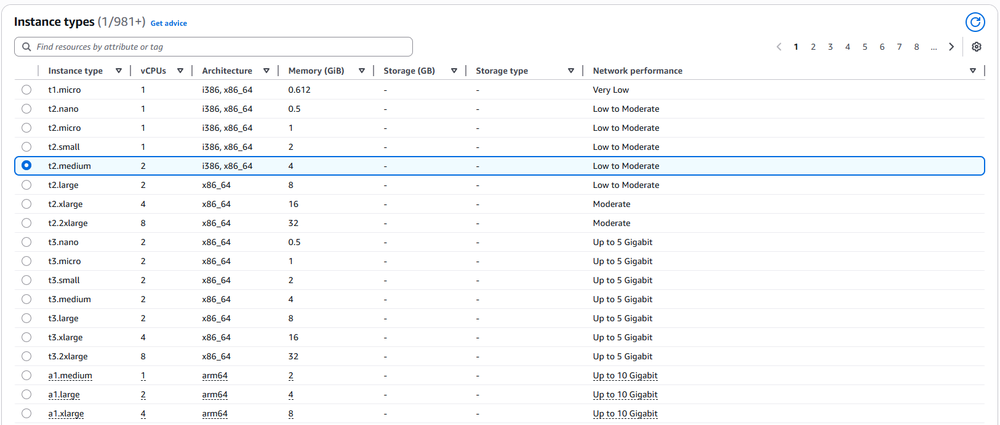
User data es un script (cloud-init) que la instancia ejecuta solo la primera vez que arranca, por ejemplo para instalar paquetes, clonar el repositorio o poner en marcha un servicio. No sustituye a una AMI bien preparada, pero en el lab te ahorra hacer a mano esos primeros pasos.
Cómo pagas EC2: On-Demand, Reserved, Savings Plans y Spot¶
| Modelo | Idea | Cuándo tiene sentido |
|---|---|---|
| On-Demand | Pagas por hora/segundo sin compromiso | Labs, picos imprevisibles, primer despliegue |
| Reserved Instances / compromiso | Descuento a cambio de plazo (1 o 3 años) | Carga estable 24/7 en producción |
| Savings Plans | Compromiso de gasto ($/h) flexible entre familias/regiones | Empresa con mix de tipos pero uso predecible |
| Spot | Capacidad sobrante, puede interrumpirse con aviso | Batch tolerante a fallos, no checkout en vivo |
En un lab y en la mayoría de prácticas de DAW usas On-Demand y, al acabar, detienes o terminas la instancia. Spot es más barato, pero AWS puede recuperar la máquina con un breve aviso, así que no sirve para una demo de evaluación que no puede cortarse. Reserved y Savings Plans son decisiones de empresa que se toman después de medir el uso durante meses, no para un ejercicio de fin de semana.
La tabla siguiente separa lo que pregunta el examen CLF-C02 (AWS Certified Cloud Practitioner, la certificación de entrada de AWS) de lo que importa en clase y en la empresa.
| Examen CLF | Clase DAW / empresa |
|---|---|
Spot = modelo de precio, no t3.micro |
No usar Spot para la demo que no puede caerse |
| Distinguir tipo/familia de modelo de compra | Rightsizing antes de Reserved |
| EC2 = tú parcheas el SO | En el .md, justificar On-Demand + terminate en labs |
Detener y terminar no son lo mismo. Al detener (stop) una instancia dejas de pagar la máquina, pero el volumen EBS se conserva y se sigue cobrando como almacenamiento mientras exista; lo que hubiera en instance store se pierde. Al terminar (terminate) eliminas la instancia, y con ella los volúmenes que tienen activado DeleteOnTermination, como el raíz por defecto; los que lo tienen desactivado siguen existiendo y cobrándose hasta que los borres. Por eso, en el lab, terminar al cerrar evita encontrarse cargos el lunes.
Para entrar en la instancia, EC2 Instance Connect te conecta desde la propia consola sin tener que manejar el .pem en el portátil del aula; el usuario (ubuntu, ec2-user…) depende de la AMI. Si entras por SSH con par de claves, el security group debe abrir el puerto 22 solo a tu IP o a un bastión (una máquina intermedia de acceso), nunca a todo internet.
Ejemplo del proyecto DAW. Imagina un t3.large encendido las veinticuatro horas «para ir holgado», cuando la API solo tiene tráfico alrededor de las 11:00: el resto del día pagas una máquina que no hace nada. Lo razonable es elegir un tipo más pequeño, apagarla fuera de horario (o usar Auto Scaling con mínimo cero, que verás en el Tema 8) y, si el trabajo es una tarea programada corta, pasarla a Lambda. El ahorro viene de dejar de pagar lo que no usas.
Errores frecuentes
- Confundir el tipo
t3.microcon Spot: el primero es un tamaño de hardware y el segundo, una forma de compra interrumpible. - Elegir Spot para el checkout o para una demo en directo.
- Dejar la instancia encendida el fin de semana: el estado running sigue facturando horas y disco.
- Abrir el puerto 22 a todo internet para entrar por SSH.
AWS Lambda¶
AWS Lambda ejecuta una función, es decir, un trozo de código, cada vez que ocurre un evento: una petición HTTP que llega por API Gateway, un fichero que se sube a S3, un mensaje en una cola o una regla programada de EventBridge. No hay ninguna máquina virtual encendida esperando: AWS prepara un entorno temporal, ejecuta tu función principal (el handler), lo retira y te cobra por el número de invocaciones y por su duración, medida en GB-segundo (la memoria asignada multiplicada por los segundos de ejecución).
Por eso Lambda encaja en tareas cortas que responden a algo concreto, como recibir el aviso de otra aplicación (webhook), redimensionar una imagen al subirla o lanzar cada hora una tarea que dura segundos. No encaja en un programa que tiene que quedarse escuchando en un puerto todo el día, en trabajos que duran horas ni en una aplicación que guarda datos en memoria para usarlos en la petición siguiente, porque cada invocación puede ejecutarse en un entorno nuevo. Cada invocación tiene un tiempo máximo (timeout) que tú configuras y que, según la documentación oficial, no puede pasar de 15 minutos. Si la tarea dura más, necesitas EC2, un contenedor o Step Functions, un servicio que encadena varias Lambdas.
El arranque en frío (cold start) es el retraso extra de una invocación cuando AWS no tiene ningún entorno preparado y debe crear uno. Importa en una API en la que cada milisegundo cuenta y apenas importa en un proceso que se ejecuta de noche. AWS mantiene y actualiza el entorno de ejecución (runtime, por ejemplo Node 20); tú te encargas del código, de las dependencias que empaquetas y del rol de ejecución, que fija con IAM (Identity and Access Management, gestión de identidades y accesos) a qué servicios puede acceder la función.
Ejemplo del proyecto DAW. Lambda no es buena opción para un chat que mantiene conexiones abiertas con los usuarios, para convertir un vídeo durante horas, para depurar entrando por SSH en la máquina ni para una aplicación Express copiada tal cual, que guarda la sesión en memoria y escucha en un puerto fijo. En esos casos suele ir mejor una EC2 o un contenedor.
Errores frecuentes
- Meter en Lambda una API Express copiada tal cual, que guarda datos en memoria y escucha en un puerto fijo.
- Elegir Lambda «porque es serverless» para un proceso que tiene que escuchar todo el día.
Contenedores: Docker, ECR, ECS, EKS y Fargate¶
Un contenedor es la aplicación empaquetada junto con todo lo que necesita para funcionar (librerías, versión de Node, configuración), de modo que se ejecuta igual en tu portátil que en AWS. Ese paquete se construye como una imagen, normalmente con Docker, y en AWS se guarda en ECR (Elastic Container Registry, registro de contenedores elástico). Para ejecutarlo hace falta un orquestador, es decir, un servicio que arranca los contenedores, los vigila y los reinicia si fallan.
Si en clase ya tienes la API en Docker, el paso natural es ECS (Elastic Container Service, servicio de contenedores elástico) con Fargate: AWS pone y mantiene las máquinas en las que corren los contenedores, y tú solo indicas cuánta CPU y memoria necesita cada tarea (task). Por eso con Fargate no parcheas el sistema operativo de esas máquinas, aunque sí mantienes y actualizas la imagen de tu aplicación. EKS (Elastic Kubernetes Service, Kubernetes gestionado) tiene sentido cuando la empresa ya trabaja con Kubernetes; para un único contenedor de prácticas es demasiado.
| Servicio | Qué aporta | Trade-off didáctico |
|---|---|---|
| ECR | Repositorio de imágenes privado en AWS | Hay que publicar imagen antes del despliegue |
| ECS | Orquestación propia de AWS | Menos portable que K8s puro |
| EKS | Kubernetes gestionado | Más control, más piezas |
| Fargate | Cómputo serverless para contenedores | Sin SSH al nodo; menos «tocar el hierro» |
Para este módulo no necesitas montar un clúster de producción, pero sí saber razonar qué opción encaja. Si la API ya está en Docker, el siguiente paso es ECS con Fargate; si el trabajo es un script de veinte segundos, basta con Lambda; y si una aplicación antigua exige un sistema operativo con una licencia concreta, su sitio es EC2.
Ejemplo del proyecto DAW. Cada opción cambia la forma de desplegar la API. En EC2, que es lo que hace el lab del módulo, lanzas la instancia en una zona de disponibilidad (AZ), le asocias el security group y te conectas a ella. En Lambda no hay ningún listen: escribes el handler en el editor de la consola, pulsas Deploy para publicarlo y Test para probarlo con un evento de ejemplo. Con ECS y Fargate subes la imagen nueva a ECR y actualizas el servicio para que arranque tareas con esa versión.
Errores frecuentes
- Montar EKS para un único contenedor de prácticas, con un plano de control, nodos y una curva de aprendizaje que no aportan nada si ECS con Fargate basta.
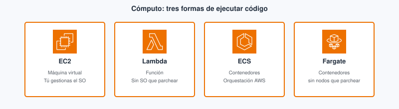
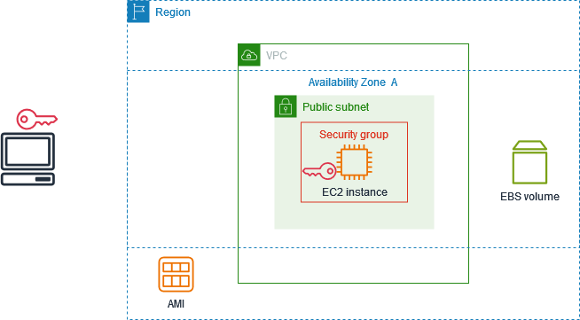
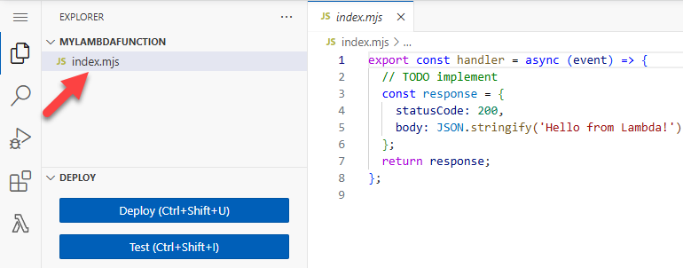
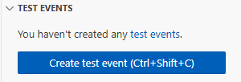
Elastic Beanstalk y Lightsail¶
Con Elastic Beanstalk subes el código de la aplicación y AWS crea por ti las instancias EC2, el balanceador y el despliegue, con menos pasos manuales; por eso se dice que es un PaaS (Platform as a Service, plataforma como servicio) construido sobre EC2. Lightsail ofrece servidores privados virtuales (VPS, Virtual Private Server) sencillos, con un precio fijo al mes, pensados para sitios pequeños. En un proyecto de DAW en el que diseñas a mano la VPC, el ALB (Application Load Balancer, balanceador de carga de aplicación) y RDS, lo normal es usar EC2 o contenedores. Beanstalk y Lightsail aparecen en el CLF-C02 como atajos para cuando no necesitas controlar la red con detalle.
Ejemplo del proyecto DAW. Si ya diseñaste en el Tema 3 la VPC, las subredes privadas, el ALB y RDS, Lightsail no sustituye ese diseño. Sirve para montar rápido un WordPress o un servidor único, pero no te hace practicar el mapa completo de la red.
Errores frecuentes
- Tratar Beanstalk, Rekognition o SageMaker como «un tipo de EC2».
- Sustituir el diseño de red del módulo por Lightsail y dar por practicada la VPC.
EC2, Lambda y contenedor: la misma API, tres formas¶
La tabla siguiente reúne lo visto en los apartados anteriores y compara las tres opciones para desplegar la misma API.
| Dimensión | EC2 | Lambda | ECS + Fargate |
|---|---|---|---|
| Quién parchea el SO | Tú (instancia) | AWS (entorno gestionado) | AWS (nodo); tú la imagen de app |
| Cómo pagas | Tiempo running + EBS | Invocaciones + duración | vCPU/memoria del task + tiempo |
| Estado / puerto | El proceso escucha en un puerto todo el día; disco propio | No escucha en ningún puerto; cada invocación puede empezar de cero | El contenedor escucha en un puerto mientras la tarea está en marcha |
| Límites | Tú eliges disco y tipo y gestionas el escalado (ASG, Tema 8) | Máximo 15 min por invocación; arranque en frío | Hay que definir la tarea; no puedes entrar por SSH a la máquina |
| Cuándo elegir | API siempre encendida, conexiones abiertas (chat), aplicaciones antiguas | Tareas cortas ante un evento, tareas programadas, webhooks | Aplicación ya en Docker, sin administrar máquinas |
| Examen CLF | Clase DAW / empresa |
|---|---|
| Lambda no sustituye todo «por moderno» | PR401: comparar estado, duración, coste 24/7 |
| Fargate ≠ gestionar SO del nodo | Docker en clase → ECS/Fargate razonable |
| Beanstalk/Rekognition/SageMaker ≠ «tipo EC2» | Nombrar el servicio correcto en el enunciado |
Relación con red y almacenamiento¶
Una EC2 sin una VPC ni un security group bien definidos es un servidor expuesto a internet (Tema 3). Su disco principal suele ser EBS (Tema 5), pero los ficheros que suben los usuarios no deben guardarse en el disco raíz de una sola instancia: las demás no los ven y, si DeleteOnTermination está activado, desaparecen al terminarla. Por último, Auto Scaling, que verás en el Tema 8, añade o quita instancias EC2 de un grupo, pero no corrige haber elegido mal el tipo o el modelo de compra.
Lab del Módulo 6¶
En Cloud Foundations, el lab del Módulo 6 consiste en lanzar una EC2: eliges la AMI, un tipo pequeño, la red del lab y el par de claves o Instance Connect, y a menudo creas o usas una AMI propia. Sigue el enunciado de la plataforma de Academy y trabaja en la región del lab. La práctica PR401 te pide además comparar esa misma carga de trabajo con Lambda, aunque en el lab solo lances la máquina virtual. Si practicas en el Learner Lab, usa LabRole y LabInstanceProfile cuando una instancia o una Lambda tengan que acceder a otros servicios de AWS, en lugar de guardar claves de acceso (access keys) en el disco.
Conectar Lambda a HTTP¶
Una API REST en EC2 recibe las peticiones directamente en un puerto. Con Lambda, el esquema habitual es poner API Gateway delante de la función: API Gateway recibe la petición HTTPS, comprueba la ruta e invoca la función pasándole los datos de la petición en formato JSON, y la función devuelve el código de estado y el contenido de la respuesta. No hay un proceso Node encendido todo el tiempo, sino que cada petición es una invocación independiente que puede sufrir cold start. Para el CLF basta con reconocer la pareja API Gateway y Lambda frente a la de un ALB que envía el tráfico a una EC2 que escucha en un puerto.
Ejemplo del proyecto DAW. Las opciones se pueden combinar en un mismo proyecto: el front como web estática en S3, las rutas dinámicas de la API en Lambda y, si el diseño lo necesita, una EC2 para las partes que mantienen conexiones abiertas.
Errores frecuentes
- Esperar que detrás de API Gateway haya un servidor escuchando siempre en el puerto 3000.
- Creer que Auto Scaling elige por ti entre Lambda y EC2: solo ajusta cuántas instancias de un tipo ya elegido hay en el grupo.
Bloque Ampliación Practitioner (CLF-C02)¶
En el CLF-C02 no basta con saber qué es EC2 o Lambda: tienes que distinguir el tipo de instancia del modelo de precio y elegir el servicio según si guarda estado, cuánto dura la tarea y quién mantiene el entorno. Algunas preguntas trampa presentan SageMaker o Rekognition como si fueran «una EC2 más grande», cuando son servicios gestionados de aprendizaje automático (ML, machine learning) y no familias de instancia. Otra trampa es pensar que Auto Scaling decide por ti entre Lambda y EC2, cuando solo ajusta cuántas instancias de un tipo ya elegido hay en el grupo.
Si el enunciado habla de una carga que puede interrumpirse y tolera el aviso de terminación, la respuesta es Spot. Si habla de un compromiso de 1 a 3 años con uso estable, piensa en Reserved o Savings Plans. Y si describe una función que se ejecuta al subir un fichero a S3, piensa en Lambda, no en una máquina virtual encendida «por si acaso».
Para el CLF
Spot es un modelo de compra, no un tamaño t3.micro. SageMaker o Rekognition no son «un tipo de EC2». Auto Scaling escala grupos de instancias, no sustituye elegir bien el cómputo. Ampliación y autocheck certificación en Certificación § Tema 4.
Videotutorial¶
Principal (Foundations). ATTA AWS Academy 03 EC2 Linux (~25 min).
Vídeo: Profe Santos Cloud (YouTube). Fíjate en la AMI, el tipo pequeño, el security group y cómo apagar o terminar la instancia, porque eso es lo que facturas en el lab.
Extra (opcional). Lambda 101 (~14 min) — contraste serverless frente a EC2 24/7. Vídeo: Profe Santos Cloud (YouTube).
Extra. Creación y gestión de EC2 — lanzar instancia: AMI, tipo, par de claves y acceso.
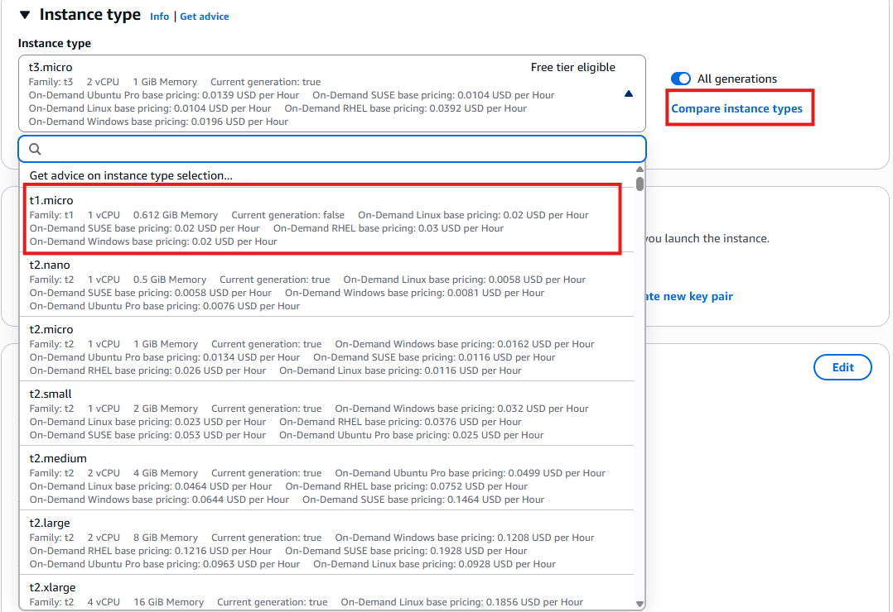
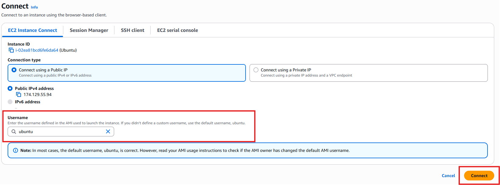
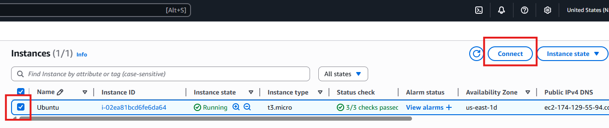
Abre el Módulo 6 en tu clase de Cloud Foundations y sigue el lab que indique Aules. Usa la región del lab.
Actividad / práctica¶
PR401 — Lanzar y comparar cómputo¶
- PR401. (RA3 // d, f // PR 0–10). Lanzas el lab Academy del Módulo 6 (EC2 / AMI) y argumentas si ese mismo workload encajaría en Lambda, mirando estado, duración y coste 24/7.
Tareas: sigue AMI/región del enunciado con tipo pequeño y SG mínimo; documenta evidencias del lanzamiento; en el .md, compara EC2 frente a Lambda (estado, tiempo, puerto persistente, coste); terminate las instancias y deja evidencia de lista vacía o parada.
Entrega: según Cómo entregar las prácticas — fichero PR401.md (o ZIP + img/ si hay capturas).
Guía de apoyo (no sustituye el enunciado): Soluciones · PR401.
| Criterio | Descripción | Puntos |
|---|---|---|
| Lab EC2/AMI | Lanzamiento según enunciado | 0–3 |
| Comparación Lambda | Estado, duración, coste 24/7 | 0–4 |
| Limpieza | Terminate / evidencias | 0–2 |
Claridad del .md |
Sin quedarse solo en el logo | 0–1 |
| Total | /10 |
Despliegue: de npm start al servicio¶
En tu portátil, node server.js abre el puerto 3000 y el navegador habla con ese proceso a través de localhost. Llevar la misma API a AWS no consiste en copiar ese comando, porque cambia quién te da la máquina, cómo llega el tráfico por la red y quién se encarga de que el proceso siga en marcha.
Si eliges EC2, primero preparas la red (la subred y el security group del Tema 3) y lanzas una instancia con una AMI que ya traiga Linux. Después instalas Node o PHP, clonas el repositorio y arrancas la aplicación. El security group debe dejar pasar el tráfico al puerto de la API solo desde el ALB o desde el origen que hayas previsto, no desde todo internet. Además, el proceso tiene que seguir funcionando cuando cierras la sesión SSH, y para eso se usa systemd, PM2 o una herramienta parecida. Como la IP pública de la instancia cambia cada vez que la detienes, el front o el DNS deben apuntar al ALB y no a esa IP.
Si eliges Lambda, no subes un servidor que hace listen. Escribes un handler, una función que recibe los datos del evento y el contexto de ejecución, la despliegas y la conectas a un disparador (API Gateway, S3, una tarea programada…). Cada petición HTTP llega a API Gateway, que invoca la función; cuando la función termina, no queda ningún programa escuchando en el puerto 3000. Por eso tienes que adaptar las rutas y el estado: lo que antes guardabas en memoria entre peticiones pasa a RDS o a ElastiCache, o deja de guardarse.
Si eliges ECS con Fargate, construyes una imagen Docker de la API, la subes a ECR, defines una tarea (task) con la CPU y la memoria que necesita y creas un servicio que mantiene en marcha el número de tareas que indiques. El balanceador (ALB) reparte el tráfico entre esas tareas. Cuando cambia el código, actualizas la imagen; no tienes que entrar a parchear el sistema operativo de las máquinas.
Ejemplo del proyecto DAW. Para elegir no sirve preguntarse cuál suena más moderno, sino cuatro cosas: si la aplicación guarda estado, cuánto dura cada tarea, quién mantiene cada parte y cuánto cuesta, sobre todo si comparas una EC2 encendida las veinticuatro horas con invocaciones sueltas. Anota ese razonamiento en PR401, aunque el lab del Módulo 6 solo te haga lanzar una EC2.
Errores frecuentes
- Copiar
npm starten AWS sin pensar quién mantiene el proceso en marcha cuando cierras la sesión. - Apuntar el front a la IP pública de la EC2, que cambia cada vez que la paras y la vuelves a iniciar.
- Dejar en RAM entre peticiones de Lambda lo que debería estar en RDS.
Autocheck del tema¶
Comprueba lo que has aprendido sobre cómputo en este tema. Para el CLF-C02 tienes más preguntas en Certificación § Tema 4.
- Una AMI es…
a) la instancia encendida · b) la plantilla para lanzar instancias · c) un tipo de precio - V/F. Spot es un tipo de instancia (
t3.micro). - Un cron de 30 s cada hora: hipótesis más razonable en Foundations…
a) EC2 24/7 · b) Lambda · c) EKS obligatorio - V/F. Con Fargate administras tú el SO de cada nodo EC2 del clúster.
- Empareja: EC2 · Lambda · ECS+Fargate con: (a) handler sin
listen· (b) SSH y SO custom · (c) contenedor sin gestionar nodos
Soluciones
-
b.
-
Falso — Spot es modelo de precio, no familia/tipo.
-
b (evento corto; EC2 24/7 suele sobrar).
-
Falso — Fargate quita la gestión del nodo.
-
EC2 encaja con (b) SSH y SO a medida; Lambda, con (a) handler sin
listen; ECS+Fargate, con (c) contenedor sin gestionar nodos.
Para preparar el examen de la 1.ª evaluación tienes una práctica orientativa que repasa en el Learner Lab lo visto en los temas 3 y 4.
Glosario¶
EC2 Elastic Compute Cloud (nube elástica de cómputo): servicio de instancias (máquinas virtuales) en AWS. Tú eliges AMI, tipo, red y almacenamiento; sueles parchear el sistema operativo. Es el análogo más cercano a «tengo un Linux donde instalo Node/Java», con factura por tiempo de vida de la instancia.
instancia Máquina virtual EC2 en ejecución o parada, creada a partir de una AMI y un tipo concreto. No confundir la instancia con la AMI ni con el tipo de instancia.
AMI Amazon Machine Image (imagen de máquina de Amazon): plantilla (SO + software) a partir de la cual se lanzan instancias EC2. No es la instancia en ejecución. Si la «buena» AMI solo vive en el disco de un compañero, el despliegue no es repetible.
tipo de instancia
Combinación publicada de vCPU, RAM y red (p. ej. t3.micro). Es hardware de plantilla, no modelo de precio.
familia de instancia
Letra inicial del tipo (t, m, c, r…): perfil de uso (propósito general, cómputo, memoria…). El rightsizing elige familia y tamaño acorde a la carga.
vCPU virtual CPU (procesador virtual): unidad de cómputo asignada a la instancia según el tipo elegido.
EBS Elastic Block Store (almacenamiento en bloques elástico): volumen de disco en red asociado a EC2. Persiste aunque detengas la instancia; al terminarla, se borra o se conserva según el atributo DeleteOnTermination. El Tema 5 profundiza en sus tipos y en las copias.
instance store Almacenamiento local en el host físico: alto rendimiento en algunos tipos, pero los datos se pierden si la instancia se detiene, hiberna o termina, o si falla el hardware.
par de claves
Key pair: credencial SSH pública/privada para acceder a instancias Linux. La privada (.pem) solo se descarga al crearla si la generas tú.
SSH Secure Shell (acceso remoto cifrado): protocolo habitual para administrar instancias Linux desde terminal. Requiere par de claves o método alternativo (Instance Connect).
user data Datos de arranque (script cloud-init) que la instancia ejecuta en el primer boot; sirve para preparar la instancia al arrancar sin tener que volver a crear la AMI.
On-Demand Modelo de compra EC2 sin compromiso: pagas por tiempo de uso. Habitual en labs.
Reserved Instances Compromiso de uso (plazo) a cambio de descuento sobre instancias con perfil estable.
Savings Plans Compromiso de gasto en $/h con flexibilidad entre familias y regiones; descuento frente a On-Demand.
Spot Modelo de compra de capacidad sobrante interrumpible; no es un tipo de instancia.
Lambda Servicio de funciones serverless: ejecuta código ante eventos sin mantener una VM encendida. Se factura por invocaciones y duración.
función Lambda Unidad desplegada (código + runtime + configuración) que AWS invoca ante un evento.
evento Lambda Disparador (API Gateway, S3, cola, cron…) que provoca una invocación de la función.
cold start Latencia extra al arrancar un entorno nuevo para atender una invocación tras periodo inactivo.
timeout Lambda Tiempo máximo de una invocación; en la documentación oficial de AWS el límite configurable llega a 15 minutos por invocación.
contenedor Proceso aislado empaquetado con dependencias; en DAW suele ser la API dockerizada.
imagen de contenedor
Plantilla inmutable de capas a partir de la cual se crean contenedores (p. ej. mi-api:1.0).
Docker Herramienta para construir, probar y publicar imágenes de contenedor en local y en CI.
ECR Elastic Container Registry: registro privado de imágenes Docker en AWS.
ECS Elastic Container Service: orquestación de contenedores gestionada por AWS (no Kubernetes nativo).
EKS Elastic Kubernetes Service: Kubernetes gestionado en AWS; más piezas que ECS para un solo contenedor de prácticas.
Fargate Modo de ejecución serverless para contenedores en ECS/EKS: AWS gestiona nodos; tú defines task/pods.
Elastic Beanstalk PaaS de AWS que despliega aplicaciones sobre EC2 gestionadas con menos pasos manuales.
Auto Scaling Servicio que ajusta el número de instancias EC2 (u otros recursos) según demanda; detalle en Tema 8.
Lightsail Servicio de VPS simplificados con precio plano; atajo para sitios pequeños, no sustituto del diseño VPC+ALB+RDS del módulo de redes.